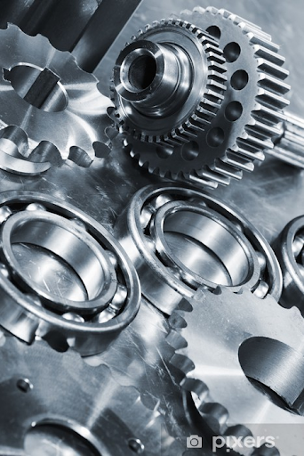
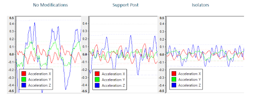
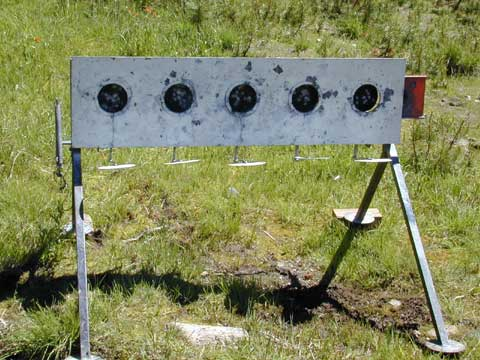

Projects
* hover over an image to read more *

Thayer School of Engineering
Amphibious Delivery Bot
March 2021 — June 2021
- Worked with a team to design and construct a bot to collect and drop off blocks while navigating both on land and in the water.
- Utilized brushed/brushless motors, servo motors, radio control, gearbox design, and mechanical transfer elements to effectively navigate the course using driven wheels, an outboard propeller, and a linkage + belt collection system.
- Designed components in Solidworks and manufactured them with a 3D printer, laser cutter, mill, and lathe.
- Team leader and competition day operator.
- Highest scoring team in the class.

Thayer School of Engineering
Pings For Positive Change
March 2019 — June 2019
- Lead hardware and software development on a 4 person team to invent and build a wearable notification device that utilizes information gathering technology to help eliminate sexual violence on college campuses.
- Awarded the Phillip R. Jackson Award in recognition of the most outstanding project of the term.
- Lead development of all hardware and software components of the project
- Responsible for timely ideation, design, and creation that incorporated client feedback throughout product development.
- Programmed the Arduino device to geolocate itself using Wi-Fi triangulation and send data to an external server from anywhere on campus. Used Javascript to allow the server to gather data and follow up with users, friends, and campus security via automated SMS messaging.

Thayer School of Engineering
Micromouse Maze Solver
March 2021 — June 2021
- Collaborated with a team to develop a bot capable of efficiently searching and solving a maze.
- Personally designed sensor layout, position control scheme, wall-following control scheme, and high-level flood fill solution algorithm.
- Used Arduino microcontroller, IR position sensors, and lego motors for navigation.
- Successfully able to search and solve the maze without contacting any of the walls.

Stealth Mode Startup
Stealth Mode Startup
“High-speed Rotational Mechanical System”
December 2020 — March 2021
(confidential project requires limited details)
- Design and construction decision-making in consultation with senior engineers.
- Experience with Mechanical, Fluidic, Electrical, and Thermal components.
- Rotary motor, ball bearings, mechanical shaft, mechanical latch, hose connections, wire routing, crimping, soldering, RTDs, strip heaters
- Hands-on work with a variety of tools.
- Torque Wrenches, Arbor Press, Drill Press, Crimp Tools, Soldering Iron, Mechanical Hardware
- Documented Manufacturing Instructions, Testing Plans, and Device History Records.

Stealth Mode Startup
Stealth Mode Startup
Vibration Isolation Troubleshooting
December 2020 — March 2021
(confidential project requires limited details)
- Identified key functional problem involving undesired vibrations being transmitted outside of desired region.
- Developed potential solution approaches, collaborated with colleagues to finalize ideas, and executed on creating a successful mitigation strategy.
- Captured high-speed videos and accelerometer data. Used Matlab software to analyze results.

Stealth Mode Startup
Eliminating Test Tube Hat Failures
June 2021 — September 2021
- Tasked with delivering a solution to an infrequent, yet critical problem involving tube hats falling off of samples inside a centrifuge.
- Diagnosed the root causes of the problem using numerical calculations, iterative testing, internal component modification, and high-speed video.
- Delivered an effective solution by redesigning critical components to updated specifications while maintaining other performance capabilities.

Dartmouth College Research
Machine Learning Aircraft Recovery
December 2019 — September 2021
- Used Python and CPLEX to optimized airline schedules and create more efficient disruption responses using a variety of machine learning approaches.
- Only undergraduate working on the project.
- Independently learned and immediately utilized Python.
- Constructed a model using past flight schedules and cost data, wrote a unique recovery algorithm, programmed a solver to optimize the assignment of aircraft, and trained ML classifiers to recognize effective solutions.

Personal Project
Backyard Ice Rink
January 2020 — March 2020
- Constructed backyard ice rink in Hanover, NH.
- Developed structural plan, purchased materials, assembled during fair weather, and maintained for the duration of the winter through multiple freeze-thaw cycles.
- Planning to reconstruct this coming winter with updates to tarp security, detail painting, ice formation, and hand-held zamboni technology.

Personal Project
Personal Project
Biathlon Target Protection (ongoing)
September 2021 — Present
- Designing a protective solution for targets that cannot withstand contact with higher power and velocity rounds that can be used at the DOC Shooting Range.
- Using steel plating, hinge mechanisms, and updated supports to create a long-lasting solution.
- Will allow for a permanent range placement that minimizes setup time to allow for more effective training.